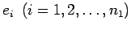
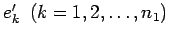
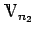
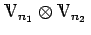
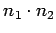
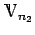
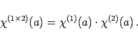

Inhalt Index DeskTop Bronstein

 Algebra und Diskrete Mathematik Klassische algebraische Strukturen Darstellung von Gruppen
Algebra und Diskrete Mathematik Klassische algebraische Strukturen Darstellung von Gruppen


Sind  und  die Basisvektoren der Darstellungsräume und , dann bilden die Tensorprodukte
eine Basis im Produktraum , der die Dimension  hat. Aus den Darstellungen D(1)(G) und D(2)(G) in bzw.  kann man eine -dimensionale Darstellung D(G) im Produktraum gewinnen, indem das direkte Produkt oder (innere) KRONECKER-Produkt der Darstellungsmatrizen bildet:
|  | (5.124) |